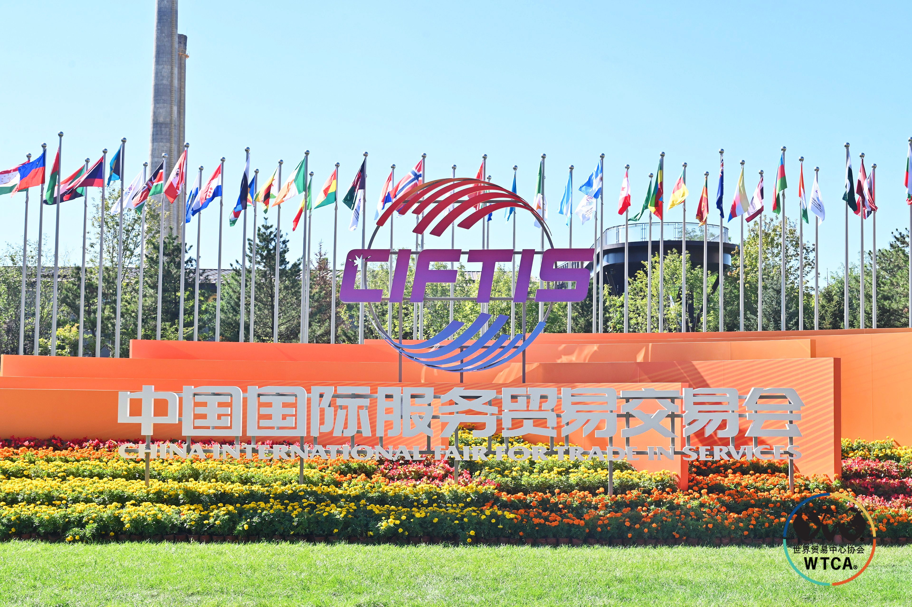
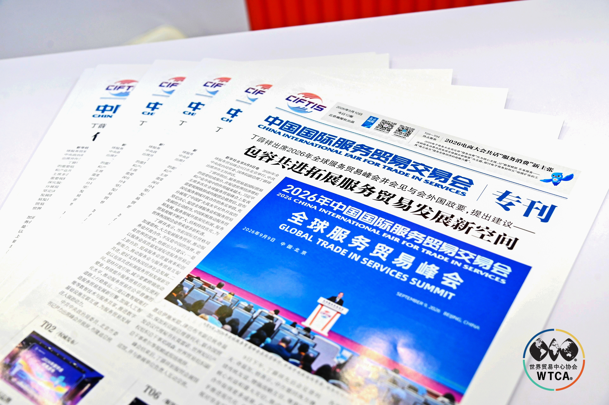
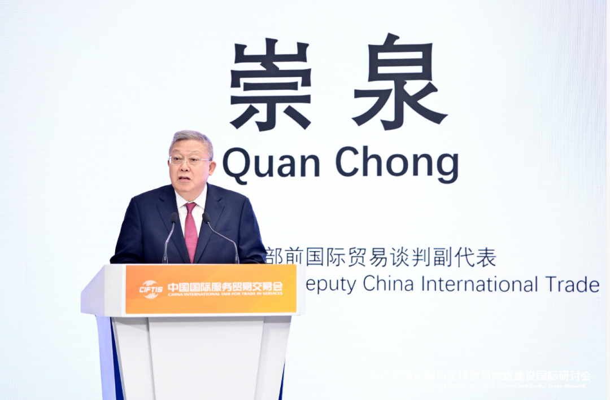
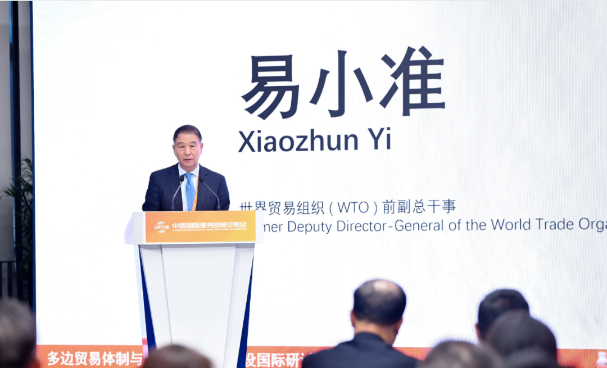
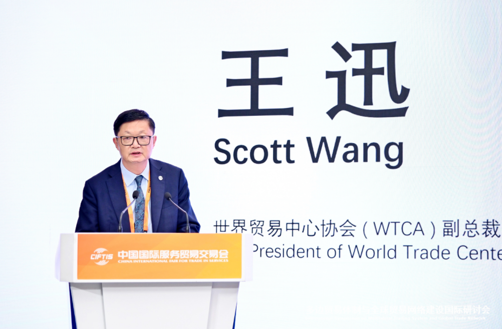
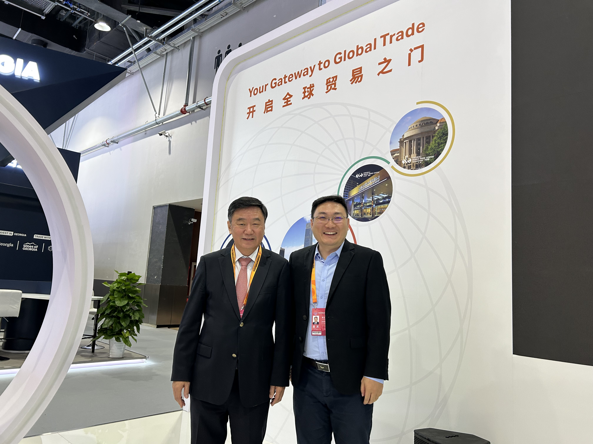
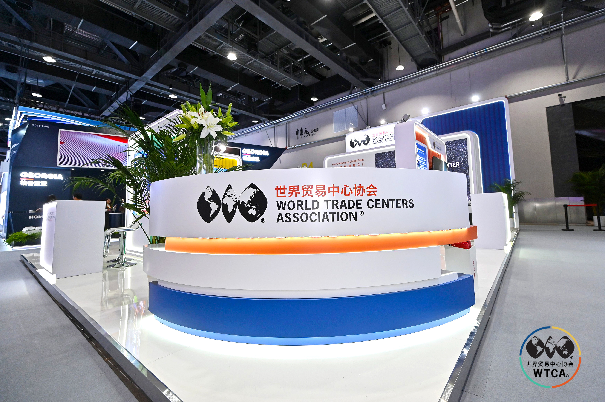
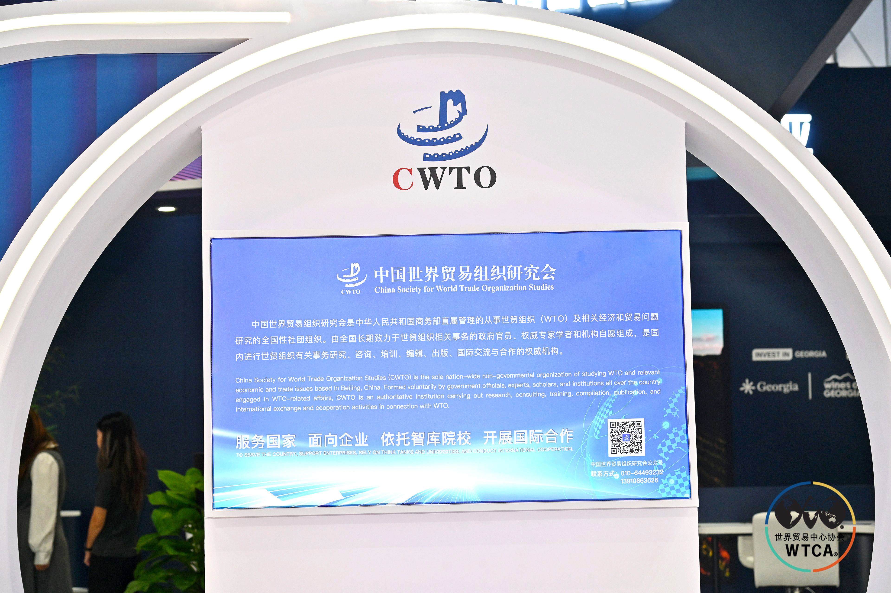
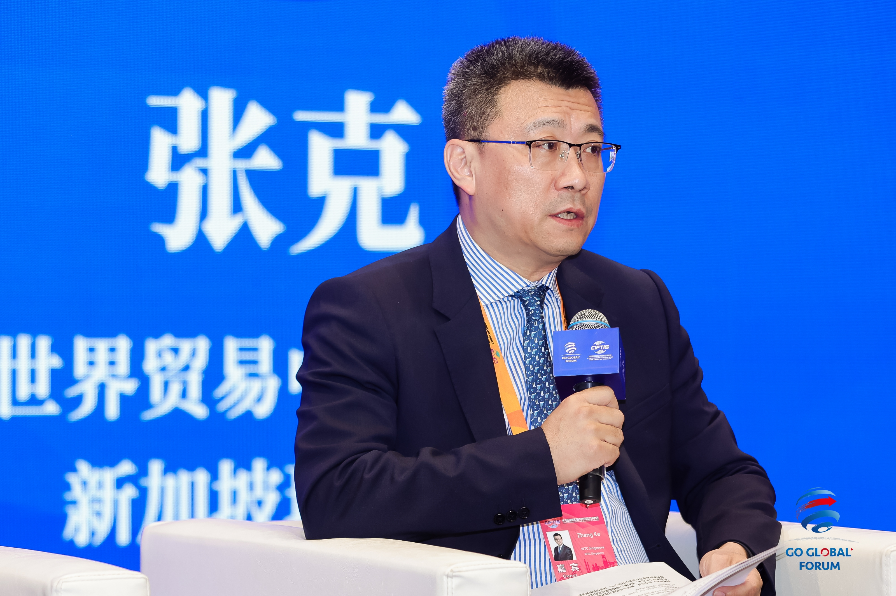
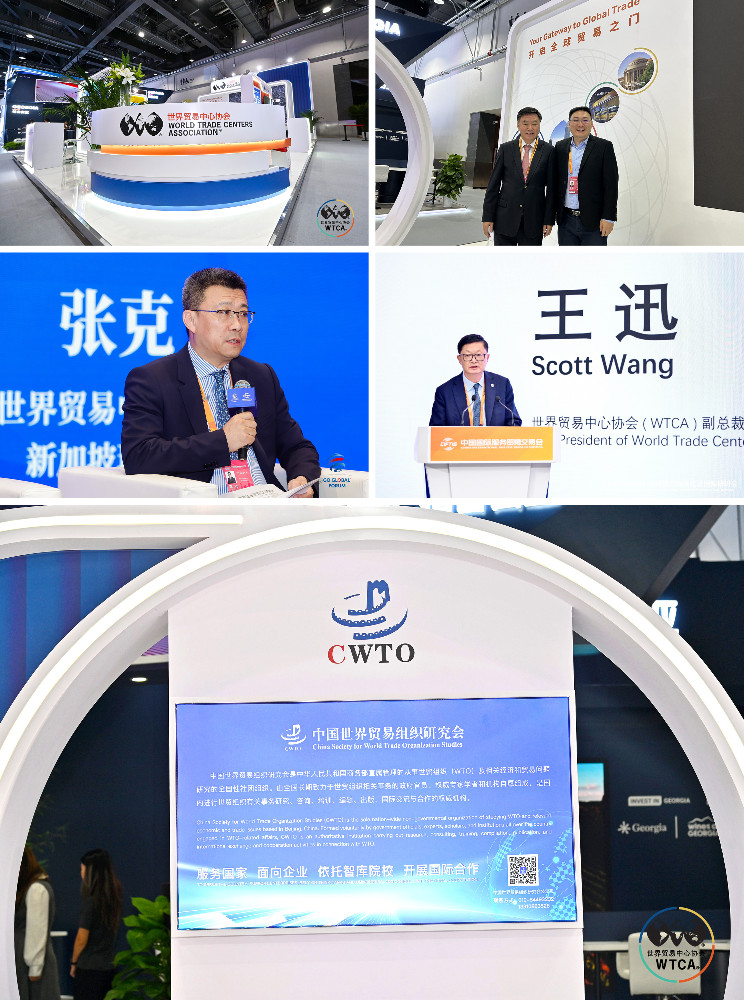

摘要：2026 服贸会期间，世界贸易中心协会（WTCA）与中国世界贸易组织研究会（CWTO）联合主办“多边贸易体制与全球贸易网络建设国际研讨会”。新加坡世贸从自身视角，记录这场高层对话，以及张克理事长在圆桌上的发声、我在展位与中国世界贸易组织研究会会长、商务部原外事司司长、中国前驻冈比亚大使马建春的一次交流。

一、背景：WTCA 是服贸会的核心国际伙伴之一
2026 年中国国际服务贸易交易会在北京首钢园正式开幕。世界贸易中心协会（WTCA）是中国国际服务贸易交易会五大核心国际组织合作机构之一。会议期间，WTCA 多个城市会员齐聚世界贸易中心专属展位——新加坡世贸的展台，也设在其中。
二、研讨会：政、商、学百余名代表，同题“全球网络”
9 月 10 日下午，由世界贸易中心协会（WTCA）和中国世界贸易组织研究会（CWTO）联合主办的“多边贸易体制与全球贸易网络建设国际研讨会”在服贸会期间举行，会议由中国国际贸易中心和北京服务贸易协会提供支持。
商务部原国际贸易谈判副代表崇泉出席大会并致辞，世界贸易组织（WTO）前副总干事易小准作主旨演讲；来自联合国国际贸易中心（ITC）、英国驻华使馆、澳大利亚驻华使馆、联合国工发组织（UNIDO）的嘉宾也先后作主旨演讲。会议还举行题为“扩大高水平开放与多边贸易规则”和“WTC 网络与全球贸易发展”的两场圆桌对话，来自政界、商界、学界的百余名代表齐聚一堂，共同探讨多边贸易体制与全球网络的价值。
作为“2026 年 WTCA 华语地区会议”的活动之一，研讨会吸引了来自华语地区十多家世贸中心、近 40 名代表的参与。WTCA 副总裁王迅代表主办单位发表致辞；WTCA 理事、CWTO 常务理事、亚太世界贸易商务联盟会长李明星主持会议。




三、张克理事长在圆桌：把“网络”从名词变成通路
在“WTC 网络与全球贸易发展”圆桌对话上，WTCA 理事、沈阳世界贸易中心董事长沈白主持讨论，新加坡世贸中心理事长张克，与天津世贸中心副理事长郝力云、重庆世贸中心副理事长赵红洁、南宁世贸中心会长尹金蕊一同参与。华语地区多座世贸中心的负责人同台，讨论的正是新加坡世贸一直践行的那句话——全球贸易网络的价值，不在于点位的数量，而在于如何让网络真正为企业所用。



四、我的展位之遇：研讨会落幕，连接才刚开始
研讨会谈的是多边贸易体制，而真正让“全球网络”落地的，往往发生在展位这样的角落。我在新加坡世贸专属展位，遇到了中国世界贸易组织研究会会长、商务部原外事司司长、中国前驻冈比亚大使马建春。一场没有议程的两人交流，聊的恰恰是研讨会主题之外、却最贴近落地的事——全球贸易网络，最终是靠一个个具体的人、一次次面对面的握手搭起来的。
我们交换了对华语地区世贸网络协同的看法，并留下了合影。于我而言，这一帧与研讨会上那一百多人的对话同样重要：高层讨论给出方向，而展位上的相遇，才把方向变成可对接、可互信、可落地的真实连接。这也正是 WTC ONE Club 存在的意义——不让“全球网络”停留在名词，而让它成为会员每一次出海都能借力的真实通路。
展会的热度会过去，但跨洋、跨城、跨层级接通的节点，一旦连上就不会再断。这一篇手记，记下的就是这样的两帧。


关于世界贸易中心协会
世界贸易中心协会（World Trade Centers Association，简称WTCA）成立于1970年，是一个非营利、非政治性机构，致力于全球各地世界贸易中心的建立和有效运营，以此促进地区经济发展、助推国际贸易和投资。协会总部位于美国纽约，全球网络包括近100个国家和地区的300多个世界贸易中心，向成千上万的企业成员和客户提供服务，帮助他们开拓货源、增加客源并提升投融资机会。
关于新加坡世界贸易中心（WTC Singapore）
新加坡世界贸易中心是世界贸易中心协会（WTCA）在新加坡的官方授权成员，依托WTC ONE Club、GlobalX、WTC Fund三大业务板块，致力于连接全球资本、创新资源与市场机会，为企业提供跨境资源对接与全球化落地支持。